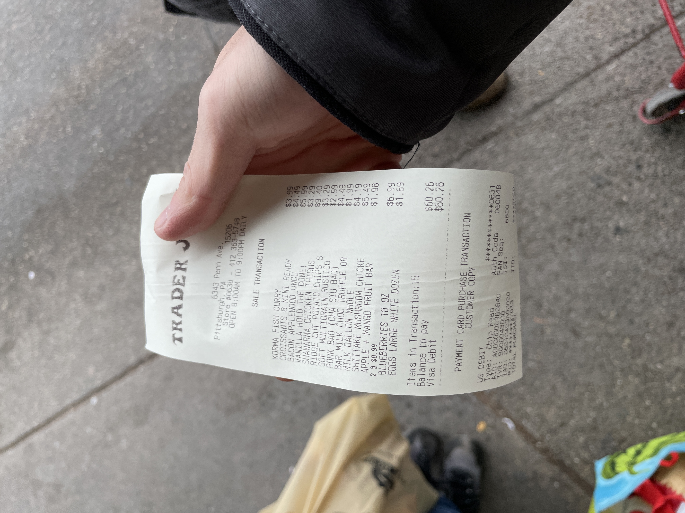

School has started for us and everything was, as busy as expected? Happy that I still get some time to sit back and reflect though : D.
Life Updates
Grocery Shopping
Instead of following a shopping list, grab what we need, checkout and go, my roommate likes to go visit every aisles in the shop, look through each item on the rack and think, ‘how useful would this be if I have it in the kitchen/fridge this week’.
Pervious felt this is time consuming and unproductive, browsing with no purpose, but thinking on the other hand, knowing that we are in a store, why the hurry? Recently felt I tend to set my eye too focused on the result, and forgot about the journey on how I get there.
It took more time yes, though with the time we spent at the shop, we got time to chat topics that doesn’t exist in dorm rooms, share the joy finding unexpected things (for last week it was Trader Joe’s ‘Asian Dipping Sause’, turned out to it was just vinegar lol).
How to Not Die Alone, A More Intentional Life
Spent sometime during winter break, finsihed the book on the flight getting back to acmpus.
‘Making life more intentional’ was the part of the book I resonate the most, not just being more proactive on finding a relationship, but making you and the counterpart on the same page, choosing an relationship, instead of sliding into it.
Now there are more freedom for me to choose, who I get to spent time with, what I wish to do, when I want to do them, things like that. Given that, wish I can be more proactive/intentional, be more informed when making choices.
Overall the book was, quite an enjoyable read, although most of the lesson I would only see myself using 10+ years from now lol.
Information System Adimission, Making Peace with Parents
Told my parents about getting adimitted into Information Systems, news I held back since August 2020.
Always found it diffcult opening up to my parents, they are the types of person who are raw, direct and unfiltered, many instances when talking with them, have this feeling of torn and reluctance, it’s almost like, peeling band aid from a fresh cut?
Though recently finished The 7 Habits of Highly Effective People, from the book:
Between stimulus and response there is a space. In that space is our power to choose our response. In our response lies our growth and our freedom.
Similar point brought out in The Boy, The Mole, The Fox and the Horse:
One of our greatest freedom is how we react to things.
Sounded big though for me, when my talking with my parents now I thought to myself, ‘how do I want to feel’, and I wish to be at peace, I wish they can be as well.
Grabbed Coffee with Ex-TA, Talked about Work-Life Balance
Went out and grabbed some coffee with an ex-TA, a college senior who is graduating this semester. During the chat she talked about what made her chose a start up over bigger corps, how she viewed the work life balance.
Never really payed attention to the idea, thought, work life balance can only be achieved when you are successful, and I was no where near to be, especailly after several rounds of interview rejections.
To the ex-TA, it’s less about how successful one is, more on, what kind of life she wish to be in. Although soon to be a college graduate, she still wish to meet like minded people, work at a slower paced enviroment. To her, start up is more like the continuation of school, allowing her to explore her options, before coming into a commitment.
Originally believed work life balance can only be achieved when you are successful, and I was no where near to be, made me rethink on my life after university.